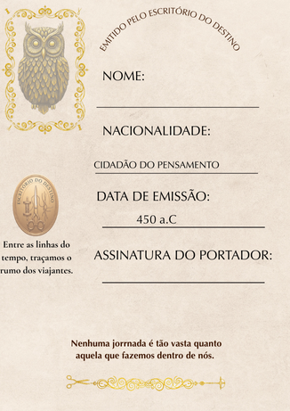
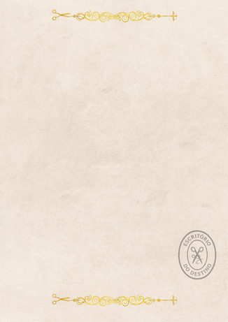

fim do primeiro arco
Algumas passagens
precisam de prova.
O documento estava entre as coisas de Sofia. Ela não lembra de ter colocado ali.




fim do primeiro arco
O documento estava entre as coisas de Sofia. Ela não lembra de ter colocado ali.

